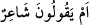
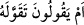
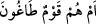
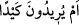

gerekliliğinden dolayı getirilmişlerdir.”
Aynu’l-maânî’de de müellif “em” edatıyla ilgili olarak şöyle zikreder: Bu suredeki on
beş “em” harfinin tamamı istifham içindir. Bunlardan dördü azarlama sebebiyle
gelmiştir. Bunlar da
1-
“Yoksa o, bir şâirdir mi, diyorlar” (et-Tur 52/30),
2-
“Yoksa, onu uydurdu mu, diyorlar” (et-Tur 52/33) sözleridir ki,
gerçekten de onlar bunu söylemişlerdir.
3-
“Yosa onlar azgın bir topluluk mudur” (et-Tur, 52/32),
4-
“Yoksa onlar bir tuzak mı kurmak istiyorlar” (et-Tur, 52/42)
âyetleridir ki, gerçekten onlar bu iki şeyi de yapmışlardır. Geriye kalan diğer tüm
(em) edatları ise inkâriye içindir.
Fethu’r-Rahman’da ise bütün bu “em” harflerinin âtıfa değil istifhâmiye olduğu
vurgulanarak, bir kişinin diğerinin cehlini bilmesine rağmen “sen câhil misin?” demesi
misalinde olduğu gibi, Allah Teâlâ da onların ahvâlini bilmesine rağmen istifham
suretiyle getirerek, yaptıkları hareketin çirkin olduğunu göstermek ve onları azarlamak
maksadını gaye edindiği belirtilmektedir.
“(O,) bir şairdir.” Yâni, yoksa o şairdir mi (demek istiyorlar.) Şiir ve şâirin ayrıntılı
tanımı Yâsin sûresinin sonlarında geçmiştir. el-Hamâse adlı eserin şârihi olan İmam
Merzûkî şu açıklamayı yapar: Arapların indinde nazım ikinci planda geldiği için
şâirler fasih konuşan hatiplerden sonra gelir. Zira Arap melikleri İslâm’dan önce de
sonra da hitabetle yarışır, tartışırlar ve hitabeti riyâsetin sebeplerinden en mükemmeli
olarak görür, şiire ise ondan aşağı bir önem atfederlerdi. Şiirin geri planda kalmasının
ikinci sebebi de onun kazanç ve ticaret maksadlı kullanılmasındandır. Şiirde kişi
tamahkarâne bir biçimde iğrenç olan fikirlerini süslü bir ûslupla verip aşağılık olan
vasfını faziletli sınıfına çıkartabilir. Nesrin nazımdan daha üstün olduğunun bir delili de
Kur’ân’ın i’câzının nazımda değil nesirde vâki olmasıdır. Zira Rasûlullah (s.a.)’in
devri güzel söz konuşma yâni hitâbet devri idi, şiir devri değil. Şiirle ilgili bu açıklama
Ravdatu’l-ahbâr’da da mevcuddur.
Şâyet sen, “İ’caz nesirde vâki olmuş ise o halde müşrikler neden Kur’ân’a şiir,
Rasûlullah (s.a.)’e de şâir demişlerdir? diye sorarsan şöyle cevap veririm: Müşrikler
Rasûlullah (a.s)’ın Kur’ân’ı tebliğ karşılığında ücret aldığını zannediyorlardı. Bu
nedenle Allah Teâlâ ondan, “Buna karşı sizden bir ücret istemiyorum” (el-Furkan
25/57) demesini istemiştir. Onların indinde Rasûlullah (s.a.) bir şair mevkiinde idi.
Şöyle ki şair ekseriyetle şiiri karşısında bir mal elde etmeye çalışır. Binâenaleyh onlar
şiiri değersiz şey kabul ettikleri için Kur’ân’a bu ismi atfederek onun değerini
düşürmeye çalışmışlardır. Şâyet yine sen, onların arasında kasidelerle şöhret kazanmış
müftehar insanların bulunduğunu ve hattâ kasidelerinin Kâbe’nin duvarlarına asıldığını
iddiâ ederek neden şiiri değersiz gördüklerini de sorarsan buna da şöyle cevap veririm: